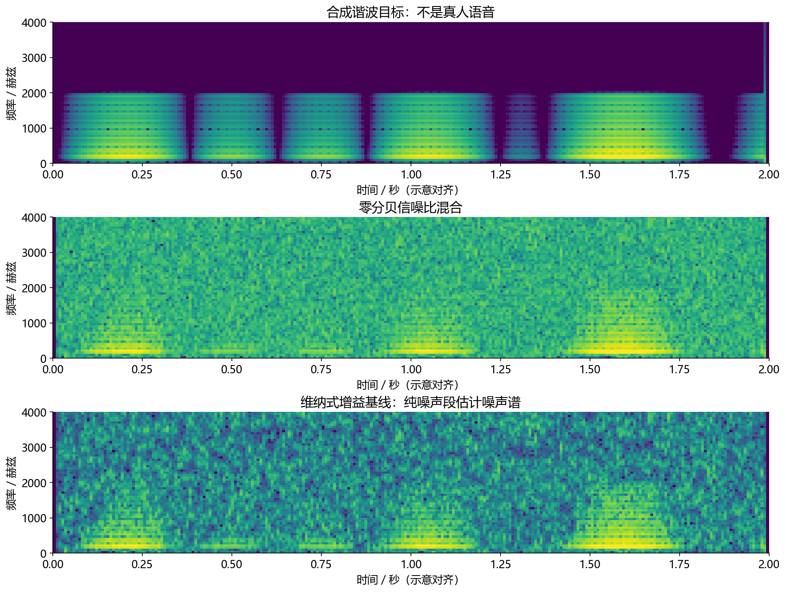
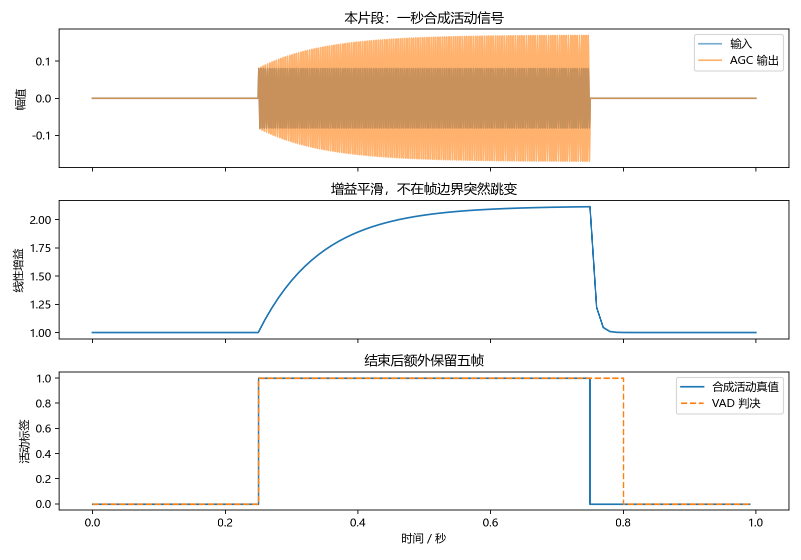
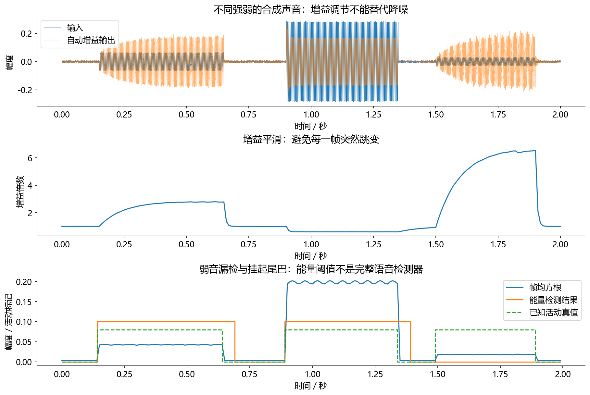

看图理解 · 跟着推演 · 对照真实结果
第09课 · 降噪、调音量和判断说话各管什么
先建立直觉，再逐节讲原理、代码与结果；章节目录可定位学习。以一秒钟活动信号为主线，解释3A、维纳增益、AGC、VAD与唤醒评测。
从直觉、原理，到代码与结果
本版保留导览小实验，增加教材逐节精讲、代码分段阅读和结果解释。三个项目另有本次真实模型短推理，第 12 课增加实际训练曲线。按右侧小节分次学习即可，不必一次看完。
完整文字、规范公式和注释代码仍在上方“读完整图文”。视频中的历史报告、教学算例与本次实测分别标明，短演示不冒充完整重训或设备验收。
先修：采样、分帧、功率与分贝
- 区分AEC、ANS、AGC、VAD与KWS
- 计算帧长和活动判决
- 解释降噪和调音量为何不是一回事
本课覆盖清单与证据范围
- 学习目标与先修
- 1. 餐厅里和智能音箱说话：五个模块各管什么
- 2. 降噪的第一直觉：保留像语音的频点，但别误以为能凭空知道真值
- 3. 运行完整降噪基线，再对照图而不是只看一个数字
- 4. 神经降噪是在学习什么，不是把“模型很大”当解释
- 5. AGC：想让声音稳定，先防止把停顿放成风暴
- 6. VAD 为什么需要两条阈值和一点耐心
- 7. KWS 与评测：别用 99% 准确率掩盖天天误唤醒
- 8. 失败排查与闭卷练习
结果从哪里来
- 导览中的小算例实际执行
- 原教材逐节讲解；正文代码/公式/图保留
代码只运行合成正弦活动的迟滞VAD与RMS计算，没有运行真实语音分类、完整AGC、神经增强或唤醒模型。
新版视频时间轴已改变，单独记录续播位置；学习计划的完成勾选保持不变。
跟着运行：注释代码、实际输出与结果图
下面代码在生成本站时实际执行。这里只是教学小实验，不是完整模型训练或业务设备测评。
import numpy as np
fs, frame = 16000, 160
t = np.arange(fs)/fs
x = np.zeros(fs) # 前后静音，中间是教学正弦，不是真人语音
x[4000:12000] = 0.08*np.sin(2*np.pi*300*t[4000:12000])
rms = np.sqrt(np.mean(x.reshape(-1, frame)**2, axis=1))
truth = ((np.arange(100)>=25)&(np.arange(100)<75)).astype(float)
flags = np.zeros(100); active = False; left = 0
for i, value in enumerate(rms):
if value >= 0.04: active = True; left = 5
elif active and value >= 0.025: left = 5
elif active and left > 0: left -= 1
else: active = False
flags[i] = active # 低电平后仍保留五次判决
frame_time = np.arange(100)*frame/fs
print('帧长/ms:', 1000*frame/fs)
print('活动帧数:', int(flags.sum()))
print('RMS/增益:', round(rms[30], 4), round(0.1/rms[30], 4))
本次实际输出
帧长/ms: 10.0 活动帧数: 55 RMS/增益: 0.0566 1.7678

精讲中的代码、运行步骤与大图
代码片段用于逐行理解；真实运行结果仅限明确标注“本次实际”的部分。教材历史图保留原有实验范围。
代码精读 04 · 第1–18行
源码精读 / 教学片段，需配套环境与上下文，不等同于独立脚本。
import sys
import numpy as np
sys.path.insert(0, "code")
from audio_core import mix_at_snr, wiener_enhance, si_sdr
fs = 16000
t = np.arange(fs*2) / fs
# 合成音仅验证算法，不把它称为真人语音测试集。
clean = 0.15*np.sin(2*np.pi*220*t) + 0.07*np.sin(2*np.pi*440*t)
rng = np.random.default_rng(9)
noisy, scaled_noise = mix_at_snr(clean, rng.normal(size=len(t)), 0)
# 校准噪声与测试噪声独立，只让功率尺度相近。
calibration = rng.normal(size=fs)*np.std(scaled_noise)
output, gain = wiener_enhance(noisy, calibration, floor=0.08)
print("输入和输出 SI-SDR：", si_sdr(noisy, clean), si_sdr(output, clean))
print("时频增益形状：", gain.shape)
assert output.shape == clean.shape
assert np.isfinite(output).all()结果读图 04 · 3. 运行完整降噪基线，再对照图而不是只
原教材运行记录

原教材已存图 不是本次新测 先确认实验范围 再解释坐标与单位
代码精读 06 · 第1–18行
源码精读 / 教学片段，需配套环境与上下文，不等同于独立脚本。
import sys
import numpy as np
sys.path.insert(0, "code")
from audio_core import frame_agc, energy_vad
fs = 16000
t = np.arange(fs) / fs
# 先静音，再小声正弦；它不是有语言内容的人声。
x = np.zeros(fs)
x[4000:12000] = 0.08*np.sin(2*np.pi*300*t[4000:12000])
y, gain = frame_agc(x, size=160)
# 迟滞判断使用原始输入，便于观察阈值，不把处理顺序当唯一标准。
rms, flags = energy_vad(x, size=160, on=0.04, off=0.025, hangover=5)
print("每帧毫秒：", 1000*160/fs, "帧数：", len(flags))
print("判为活动的帧数：", int(flags.sum()))
assert len(flags) == 100
# 把本片段的电平、增益、VAD 真值/预测并排放在同一时间轴。代码精读 06 · 第19–36行
源码精读 / 教学片段，需配套环境与上下文，不等同于独立脚本。
from pathlib import Path
import matplotlib
matplotlib.use("Agg")
import matplotlib.pyplot as plt
plt.rcParams.update({"font.family": "Microsoft YaHei", "axes.unicode_minus": False})
fig, axes = plt.subplots(3, 1, figsize=(10, 7), sharex=True)
axes[0].plot(t, x, label="输入", alpha=0.6)
axes[0].plot(t, y, label="AGC 输出", alpha=0.6)
axes[0].set(ylabel="幅值", title="本片段：一秒合成活动信号")
axes[0].legend()
axes[1].plot(t, gain)
axes[1].set(ylabel="线性增益", title="增益平滑，不在帧边界突然跳变")
frame_time = np.arange(len(flags))*160/fs
truth = (np.arange(len(flags)) >= 25) & (np.arange(len(flags)) < 75)
axes[2].step(frame_time, truth.astype(int), where="post", label="合成活动真值")
axes[2].step(frame_time, flags.astype(int), where="post", ls="--", label="VAD 判决")
axes[2].set(xlabel="时间 / 秒", ylabel="活动标签", title="结束后额外保留五帧")
axes[2].legend()代码精读 06 · 第37–42行
源码精读 / 教学片段，需配套环境与上下文，不等同于独立脚本。
fig.tight_layout()
out = Path("tutorial/figures/ch09_agc_vad.png")
out.parent.mkdir(parents=True, exist_ok=True)
fig.savefig(out, dpi=160)
plt.close(fig)
print("已保存运行图：", out.as_posix())结果读图 06 · 5. AGC：想让声音稳定，先防止把停顿
原教材运行记录

原教材已存图 不是本次新测 先确认实验范围 再解释坐标与单位
结果读图 07 · 6. VAD 为什么需要两条阈值和一点耐
原教材运行记录

原教材已存图 不是本次新测 先确认实验范围 再解释坐标与单位
闭卷自测：帧移10 ms，真实活动50帧，后面挂起8帧，理想实验共多少活动帧？
50+8=58帧，额外挂起约80 ms；不代表整套端点器只有80 ms等待。
逐字讲稿 · 可定位回看
智能音箱正播放音乐，你在旁边说“打开灯”，风扇还在响。自己播放回来的音乐有参考，交给 AEC；风扇属于背景干扰，是降噪要处理的；声音忽大忽小则由增益控制考虑。
用单纯放大做对照：人声幅度取 0.08，噪声幅度取 0.02，二者一起乘以 2 后变成 0.16 和 0.04。 人声更大了，噪声也更大了；二者比例没有改善。这解释了为什么 AGC 不是降噪。
VAD 可以告诉系统“这一段像有人说话”；KWS 再问“是不是指定唤醒词”；ASR 才进一步输出文字。它们的错误也要分别统计。 这些模块不是永远按同一顺序拼接就正确。设备链路、参考位置、增益变化和延迟会影响结果，需要实测。
假设音箱正在播放音乐，你说打开灯，旁边还有风扇。播放音乐绕回麦克风是回声，风扇是背景干扰，你说得太轻是电平问题，而系统还要知道你何时开始说话。
AEC 利用播放参考处理回声；ANS 或 NS 处理未知噪声；AGC 调整电平。这三个通常就是招聘里的三 A。VAD 判断语音活动，KWS 判断有没有指定关键词，它们不属于这三个字母。
如果系统知道现在有人说话，并不代表知道说了打开灯。把整句话变成文字还要 ASR。先把任务输入输出画清楚，才能判断一个模块改善了什么，不能看到都叫音频算法就混在一起。
时域混合是目标加噪声，转换到短时频谱以后，仍然是复数相加。这里的加法不能换成三个幅度直接相加，因为相位也参与叠加，甚至可能互相抵消。
最简单的增强方法给每个时频格点乘一个增益。估计目标强就多保留，噪声强就多压。但格点不是贴着语音或者噪声标签的小盒子，关掉它时可能连目标信息一起关掉。
因此背景变安静并不是唯一成功标准。你还要听辅音有没有丢失、尾音有没有断裂，并检查下游识别是否变化。今天不运行完整降噪模型，先用可算清楚的增益理解它的作用。
在线性最小均方等简化条件下，维纳增益是目标功率除以总功率。目标功率四、噪声功率一，增益就是零点八。反过来目标一、噪声四，增益就是零点二。
两种功率单位必须相同，得到的增益没有单位。目标越占优势，增益越接近一；噪声占优势就压得更强。但这个公式没有告诉我们现实里怎样知道干净目标的功率，那是需要估计的困难。
从纯噪声段估计噪声统计是一种基线。若校准是风扇而后来出现敲键盘，旧统计可能跟不上。神经网络换成从数据学习修正量，也仍要面对未见噪声、语音损伤和因果时延。
均方根先把每个采样平方，再求平均，最后开方。若当前均方根为零点零二，目标为零点一，理想增益就是五。不要先平均波形再平方，正负波形会相消，得到完全不同的量。
语音和噪声一起乘五，功率都乘二十五，它们的比值没有变。因此 AGC 不等于降噪。停顿里只有背景时，盲目追逐目标电平可能把背景放得很响。
产品还需要最大增益、静音控制、起控释放和峰值保护。已经削波的失真不能靠事后调低恢复。我们的实验只打印理想增益，不能据此声称实现了带动态控制的完整 AGC。
一秒钟、十六千赫兹共有一万六千个采样。每一百六十点分成一帧，正好得到一百帧，一帧十毫秒。今天不重叠，所以帧长和判决更新间隔相同。
前四分之一秒保持零，中间半秒放一个三百赫兹正弦，最后四分之一秒又为零。它没有文字内容，只是一段已知开始和结束的活动信号，适合检查帧索引和时间换算。
真实 VAD 要区分人声与非人声，而正弦、音乐、风声都可能有很高能量。所以我们的能量门限演示只解释状态逻辑，不是已经训练出能识别人类讲话的分类器。
如果只设一条零点零四门限，电平在门限附近上下抖动时，状态可能不停开关。我们用较高门限进入活动，用较低门限保持活动，这种进入和退出条件不同的机制叫迟滞。
当电平低于保持门限，也不立刻关闭，而是再保留五次判决。每次间隔十毫秒，所以额外保留五十毫秒。这样可以保护短暂变弱的尾音，也意味着系统晚一点确认结束。
如果窗口改成二十毫秒但每十毫秒更新一次，五次判决仍对应约五十毫秒，不是简单用窗口宽度相乘。实际端点器还可能等待其他证据，VAD 安静也不等于说话人语义上已经说完。
先看重排：一万六千个采样变成一百行、一百六十列，每行是一帧。平方后沿列求平均再开方，得到一百个均方根。这里没有把所有帧混在一起只求一个整段电平。
循环中先检查开启门限，再检查较低保持门限。低于门限时，剩余挂起次数递减，直到用完才关掉。每一帧都写入标签，因此输出可以和同一时间轴上的真值逐点比较。
最后打印帧长、活动帧数和某个活动帧的均方根。幅度零点零八的完整正弦，其均方根约为零点零八除以根号二。实际值由这些具体采样算出，不是把峰值当成均方根。
先对齐两条曲线的开始位置，都从四分之一秒附近进入活动。接着看四分之三秒：真值已经结束，预测标签仍维持一段。这不是模型忽然发现新的语音，而是我们明确写入的五帧挂起。
活动真值持续五十帧，程序应打印五十五帧活动。预测在零点八秒关闭，对应五十毫秒额外保留。图的纵轴是零或一的状态，不是音频幅度，也不是经过校准的概率。
这个实验没有噪声，所以开始位置很整齐。给静音区加入大幅度非语音，再观察误检，才能体会能量判决的局限。不要用这张干净教学图对外宣称真实 VAD 达到百分之百准确。
KWS 不只判断是否有声音，而是判断有没有指定词。假设十小时背景里错误唤醒三次，误唤醒率是每小时零点三次。这个分母是小时，不是音频帧数。
再准备一百次真实唤醒，如果漏掉八次，漏检率是百分之八。阈值调得严格可能减少误唤醒，也可能增加漏检，所以单报一个百分之九十九准确率会掩盖重要代价。
先在开发集选择阈值，再在独立测试集报告两个指标。不同口音、距离和噪声要分组检查。不断看测试集修改门限，再叫它未见测试，是评测泄漏，不是算法进步。
暂停计算：二十小时没有唤醒词的录音出现四次误触发，三百次真实唤醒漏掉十五次。前者是每小时零点二次，后者是百分之五。两个分母不同，不能合并成一个准确率。
动手把挂起从五帧改成八帧，预测活动应增加到五十八帧；再把帧移与窗口分开设计，检查时间换算。每次保存参数、输出图和一句解释，避免只有代码没有读图能力。
本课需要记住各模块职责，能手算增益、均方根和挂起时间，能看代码跟踪状态。完整课保留传统增强、神经增强和评测内容；视频负责把核心机制讲明白，下一步仍要自己运行并比较失败案例。
AEC参考要对应实际送往扬声器的播放信号。如果参考取在某个增益处理之前，而实际播放随后发生变化，回声预测面对的输入就不匹配。先画清采集与播放两条链路，再谈模块顺序。
降噪改变频谱与噪声统计，VAD和增益控制的行为可能跟着变化。不能把独立模块各自最优的配置直接拼起来，就认定整条链最优；要保留中间音频和触发事件。
AGC可以缓慢调节电平并配合限幅，但已经削掉的波形尖峰不会凭空回来。测试要同时覆盖很轻、正常和很响的输入，以及突然转强、突然转弱的情况。
帧级准确率高不代表体验好。大部分时间都安静时，一直判断静音也可能得到看似很高的准确率，却漏掉所有短命令。需要分别报告误检和漏检。
起点晚一点可能吞掉第一个字，终点太早可能截断尾音；终点过晚又增加等待。双门限和hangover是在稳定性与延迟之间取舍，不能只把尾巴越长当成越稳。
实习练习可准备带人工起止点的小集合，画输入能量、原始判定和平滑判定三条轨迹，再记录截音与等待。不要仅用一个固定能量门限宣称完成通用语音活动检测。
本章把几个容易混淆的名字变成具体任务。读完应能解释降噪、调音量、检测说话和识别唤醒词为什么不是一回事；能手算维纳增益、AGC 增益与 VAD 挂起时间；
能搭起带测量的前端实验。先修是采样率、分帧、STFT、信噪比。建议先花 90 分钟理解链路，再分两次各 60 分钟运行实验和整理错误样例。
第一次学习先完成传统降噪、AGC 和能量 VAD。第 4 节神经降噪先了解输入输出，学完第 12 课训练基础再深入；KWS 先掌握评测方法，不要求本章就训练一个唤醒模型。
假设音箱正播放音乐，你在较远位置说“你好，打开灯”，旁边还有风扇。AEC 处理设备自己播放回来的声音；ANS/NS 减小未知背景干扰；AGC 调整总体电平；VAD 判断哪些时间有语音；KWS 判断是否出现指定唤醒词。下游 ASR 再把真正的指令识别成文字。
招聘里常说的“3A”通常指 AEC（声学回声消除）、ANS（自动噪声抑制）和 AGC（自动增益控制）。VAD 和 KWS 可以与它们配合，但不算这三个 A；ANC（主动噪声控制）也不是 ANS 的另一个名字。
模块：AEC。它回答的问题：哪些声音是设备自己播放回来的？。典型输入输出：麦克风＋播放参考→残差。不能替代什么：不能靠线性参考消除所有未知声音。
模块：ANS/NS。它回答的问题：哪些成分是背景干扰？。典型输入输出：音频→增强音频。不能替代什么：不保证每次都提高 ASR 正确率。
模块：AGC。它回答的问题：音量是否处于合适范围？。典型输入输出：音频＋状态→调电平音频。不能替代什么：不会自动提高信噪比。
模块：VAD。它回答的问题：此刻是否有语音活动？。典型输入输出：音频帧→概率或标签。不能替代什么：不认识具体说了什么。
模块：KWS。它回答的问题：是否出现某个关键词？。典型输入输出：音频片段→关键词判决。不能替代什么：不等于通用语音识别。
“先清洁、再调音量、再检查内容”是方便入门的理解顺序，不是所有产品唯一的执行顺序。VAD 可以在多处参与控制，
数字与模拟增益也可能分层。AEC 的参考和麦克风之间若经过了不一致处理，还会破坏回声建模；设计链路必须记录每一步输入来自哪里。
麦克风混合可写成 y[n]=s[n]+v[n]。STFT 后是复数相加 Y=S+V；它不是三个幅度直接相加。我们尝试给每个时频单元一个增益 G，输出为 估计 S=GY。目标强就少压，噪声强就多压。这像把房间里不同小灯分别调亮暗，但一个频点可能同时有目标和噪声，不能认为关掉某个格子只会去噪、不伤语音。
在线性最小均方误差、信号与噪声不相关等简化条件下，维纳增益为：
其中 P下标s 与 P下标n 是相应时频位置的非负功率量，单位相同，增益无量纲。该分式要求 P下标s+P下标n>0；静音时两者可能同时为零，代码在分母加小正数，避免 0/0。如果语音功率为 4、噪声功率为 1，增益是 0.8；如果语音功率为 1、噪声功率为 4，增益是 0.2。 实际没有干净语音真值，所以本课基线先从额外纯噪声段估计 P下标n，再用 最大值bigl(lvert Yrvert的幂2-P下标n,0bigr) 估计语音功率。最大值避免负功率，但也暴露了这是估计规则，不是精确分解。若校准噪声是风扇，实际突然变成敲键盘，旧估计可能不适用。
本轮短片段实际输出：输入 SI-SDR 约 0.023 dB，输出约 5.804 dB，增益形状 (253,129)。这是下面完整实验图之外的另一条已运行验证。129 个频率点来自 256 点实数 FFT；253 帧则与本课程 STFT 的补齐、帧长和帧移共同有关。
第一步控制输入 SNR 为 0 dB，即整段信号功率与噪声功率相等。calibration 与混合中实际那段噪声不同，避免拿测试真值作弊。floor=0.08 让增益不低于某个下限，可以减轻极端断续，也会保留更多底噪。gain 的两个轴是帧和频率，不能拿它直接当时域波形播放。
这张图来自已运行的 code/run_experiments.py，不是上面两条正弦片段的即时截图。完整脚本使用更丰富的合成谐波；其记录在 results/dsp_results.json，输入 SI-SDR 约 −0.01 dB、输出约 5.11 dB。
上面的新片段应以自己的打印值为准，不能抄用该数字。
读图先看上图的水平谐波条纹，再看中图噪声把条纹之间填亮。下图如果背景变暗而条纹保留，说明目标结构相对更清楚；如果条纹也被擦断，
说明目标受到损伤。色阶必须一致，否则单独调暗输出图也能制造“降噪很好”的错觉。再试听咝声、尾音、颗粒感和忽大忽小，不只听背景安不安静。
这几行依次得到fs。它们对应“3. 运行完整降噪基线，再对照图而不是只看一个数字”中的中间量。逐行代入本节小例子的数值，确认每次赋值改变的量；代码片段承接前一段变量，不应脱离上下文单独运行。
先看中文注释：合成音仅验证算法，不把它称为真人语音测试集。；校准噪声与测试噪声独立，只让功率尺度相近。。arange按固定步长生成索引。若随后除以采样率，才把采样点编号换成秒。 正弦或余弦的输入是弧度。频率乘以时间再乘二派，才得到相位；幅度系数控制波形大小。
断言把预期写成可失败的检查。通过只说明这一条件成立，不自动代表声音质量或全部场景合格。 打印是观测点。把这里的真实值与理论预期比较，若不一致应保留输出排错，而不是手工改成期望数字。
先看这张随教材保存的图。完整实验脚本的干净、带噪与增强声谱图。三幅图采用相同色阶。。本次视频引用既有结果，不把它称为新运行。
横轴、纵轴、图例和单位决定图在回答什么问题。若曲线重合，先问它验证的是数值等价、形状还是算法质量。图像相似不自动证明真实业务效果相同。
把图中观察与本节假设联系起来，再回到前面的代码确认数组来源。合成信号实验、历史报告和真实模型输出属于不同证据范围，不能混成同一个成绩。
传统基线靠手写统计规则估计增益；神经网络从带噪输入学习预测掩码、干净谱或波形。最容易起步的是幅度掩码：输入带噪对数幅度，输出每个时频位置的保留比例，再乘原始复数谱重建。它继承了带噪相位，强噪声下可能限制质量。
进阶路线包括复数掩码、复数谱估计、时域模型和深度滤波。每种都需要说明张量形状、因果性、训练目标和重建方法。对实时应用，使用未来帧的模型即便计算很快，也有预看时延；RTF<1 不能自动证明对话低延迟。
先验收数据：干净与带噪是否时间对齐？训练和测试是否按说话人分开？噪声种类是否泄漏？补零帧有没有错误参与损失？这些比先换更大网络更适合新手起步。课程 训练实战 提供已运行的小型网络和真实训练曲线，但训练数据为合成教学数据，不等于商用真人语音降噪模型。
若当前 RMS 是 0.02，目标是 0.1，理想线性增益为 5，即约 13.98 dB。语音和噪声同乘五，二者功率同乘二十五，所以 SNR 不变。若原来只有底噪，AGC 可能把它一起放大。
因此需要最大增益、静音或活动控制、平滑以及峰值保护。输出已经削波的失真，也不能靠后面再压低音量恢复。课程实现用较快衰减避免突然太响，用较慢提升减少底噪抽吸；最终硬裁剪只是教学保护，不是高质量限制器。
把视线放到 0.75 秒：真值已结束，虚线判决仍保持约 50 ms，正是五帧挂起。中图在强度切换处连续变化，说明增益保留了历史状态。这只是合成正弦活动检测，不能据此声称能可靠区分真实人声与音乐。 本轮实际输出为帧长 10.0 ms、100 帧、55 帧判为活动。目标片段本身持续 50 帧，另外五帧来自挂起。这恰好说明“多保留尾音”和“增加结束等待”是同一机制的两面。
这几行依次得到fs。它们对应“5. AGC：想让声音稳定，先防止把停顿放成风暴”中的中间量。逐行代入本节小例子的数值，确认每次赋值改变的量；代码片段承接前一段变量，不应脱离上下文单独运行。
先看中文注释：先静音，再小声正弦；它不是有语言内容的人声。；迟滞判断使用原始输入，便于观察阈值，不把处理顺序当唯一标准。。arange按固定步长生成索引。若随后除以采样率，才把采样点编号换成秒。 正弦或余弦的输入是弧度。频率乘以时间再乘二派，才得到相位；幅度系数控制波形大小。
先看中文注释：把本片段的电平、增益、VAD 真值/预测并排放在同一时间轴。。sum沿指定维度累加。它不是平均值，样本数或维度改变时量级也可能改变。 断言把预期写成可失败的检查。通过只说明这一条件成立，不自动代表声音质量或全部场景合格。
绘图展示的是传入数组。核对横轴单位、图例与统一尺度后，才可以比较不同处理的变化。
绘图展示的是传入数组。核对横轴单位、图例与统一尺度后，才可以比较不同处理的变化。
arange按固定步长生成索引。若随后除以采样率，才把采样点编号换成秒。
打印是观测点。把这里的真实值与理论预期比较，若不一致应保留输出排错，而不是手工改成期望数字。 绘图展示的是传入数组。核对横轴单位、图例与统一尺度后，才可以比较不同处理的变化。
打印是观测点。把这里的真实值与理论预期比较，若不一致应保留输出排错，而不是手工改成期望数字。 绘图展示的是传入数组。核对横轴单位、图例与统一尺度后，才可以比较不同处理的变化。
打印是观测点。把这里的真实值与理论预期比较，若不一致应保留输出排错，而不是手工改成期望数字。 绘图展示的是传入数组。核对横轴单位、图例与统一尺度后，才可以比较不同处理的变化。
先看这张随教材保存的图。上方一秒片段的真实运行结果：输入与输出、增益、VAD 活动标签。。本次视频引用既有结果，不把它称为新运行。
横轴、纵轴、图例和单位决定图在回答什么问题。若曲线重合，先问它验证的是数值等价、形状还是算法质量。图像相似不自动证明真实业务效果相同。
把图中观察与本节假设联系起来，再回到前面的代码确认数组来源。合成信号实验、历史报告和真实模型输出属于不同证据范围，不能混成同一个成绩。
如果只有一个门限 0.04，帧 RMS 在 0.039 与 0.041 之间抖动，状态就可能不停切换。这里代码比较的是 RMS 幅值，不是平方后的能量，不能把同一门限直接挪给能量判决。迟滞设置较高的开启门限 on 和较低的关闭门限 off：进入语音需要更强证据，已经进入后则不因小幅变弱立即退出。
挂起 hangover 再保留几个低电平帧，保护尾音。
16 kHz 下，160 点是 10 ms；五帧挂起约 50 ms，但整个端点器的结束等待还可能包含其他规则。不能把 VAD、端点检测和对话轮次结束判断画等号。说话人思考半秒，VAD 可能是无声，语义上却未必说完。
本例是不重叠分帧，因此帧长等于帧移。若换成 20 ms 窗长、10 ms 帧移，五次判决对应的挂起量仍约为 50 ms，而不是 100 ms；应按判决更新的时间间隔计算，再加上窗口等待及其他缓存。
该图同样由 code/run_experiments.py 产生，场景与上面一秒片段不同。先看低音量段的增益上升是否平滑，再看强音是否被压低，最后对比 VAD 真值与预测的开始和结束位置。完整实验 F1 约 0.792；这不是通用真实语音 VAD 分数，只是合成活动标记测试。
能量检测还会把风声、音乐等非语音当作活动。
先看这张随教材保存的图。完整 AGC/VAD 实验的输入、增益和活动判决。。本次视频引用既有结果，不把它称为新运行。
横轴、纵轴、图例和单位决定图在回答什么问题。若曲线重合，先问它验证的是数值等价、形状还是算法质量。图像相似不自动证明真实业务效果相同。
把图中观察与本节假设联系起来，再回到前面的代码确认数组来源。合成信号实验、历史报告和真实模型输出属于不同证据范围，不能混成同一个成绩。
KWS 需要识别指定词，例如“你好小智”。模型可能用 Log-Mel 加小型 CNN，也可能采用其他结构；关键不只是网络名称，而是正样本覆盖不同说话人、口音、距离、音量，并有足够长的无关键词背景。
假设 10 小时负样本录音出现 3 次误触发，误唤醒率是 0.3 次/小时。100 次真实唤醒漏掉 8 次，漏检率为 8%。若先在开发集选阈值，再在独立测试集报告这两个指标，才更可比较。不要反复看测试集调阈值后仍称其“未见测试”。
VAD 要看帧级精确率、召回率、F1，也要看句首截断和尾端等待。增强要看目标保真、噪声残留、SI-SDR 改善以及适用的感知指标；有 ASR 目标时还要测 CER/WER。AGC 要看目标电平、峰值削波、增益波动和背景提升。单一指标无法替代完整听感和业务目标。
失败表现：噪声没了，人声也没了。优先检查：掩码过强、训练目标、静音偏置。改动后要补测：干净输入是否受损。
失败表现：换个噪声就失败。优先检查：噪声校准失配、训练覆盖不足。改动后要补测：未见噪声分组。
失败表现：尾音被截掉。优先检查：VAD 门限、挂起、端点逻辑。改动后要补测：结束等待时间。
失败表现：停顿时背景越来越响。优先检查：AGC 静音控制和释放策略。改动后要补测：纯背景长录音。
失败表现：演示成功，实际天天误唤醒。优先检查：负样本不足、阈值过松。改动后要补测：小时级误触发和漏检。
失败表现：增强后识别反而下降。优先检查：辅音失真、分布变化。改动后要补测：相同 ASR 的前后 CER。
练习一：P下标s=9,P下标n=1 时维纳增益是多少？答案是 0.9，不是 9，也不是把噪声完全减零。
练习二：一帧 320 点、16 kHz、挂起 8 帧，相应的帧长与挂起量是多少？答案是 20 ms 和约 160 ms。
练习三：20 小时无唤醒词背景误触发 4 次，300 次唤醒漏掉 15 次？答案是 0.2 次/小时和 5%。这两个数需要连同数据与阈值设置报告。
实习作业：做“可回放的语音前端评测台”。至少保存未处理、维纳基线和一个神经方法的输出；选十个成功和十个失败样例；按噪声、距离、音量分组；
绘制增益、VAD 状态与输出声谱；记录首包、总时延及 RTF。第一周只把传统基线和评测跑正确，第二阶段再加入模型。
成果不是一段“听起来不错”的视频，而是一套别人能复查的对照实验。
适用边界与参考正文
代码只运行合成正弦活动的迟滞VAD与RMS计算，没有运行真实语音分类、完整AGC、神经增强或唤醒模型。
教学图与实验图由本站整理生成；项目代码、预训练模型和公开数据的来源见配套正文。旁白是本地中文语音合成，不是教师真人录音，也不是 NotebookLM 生成。没有向 Google 上传项目材料。